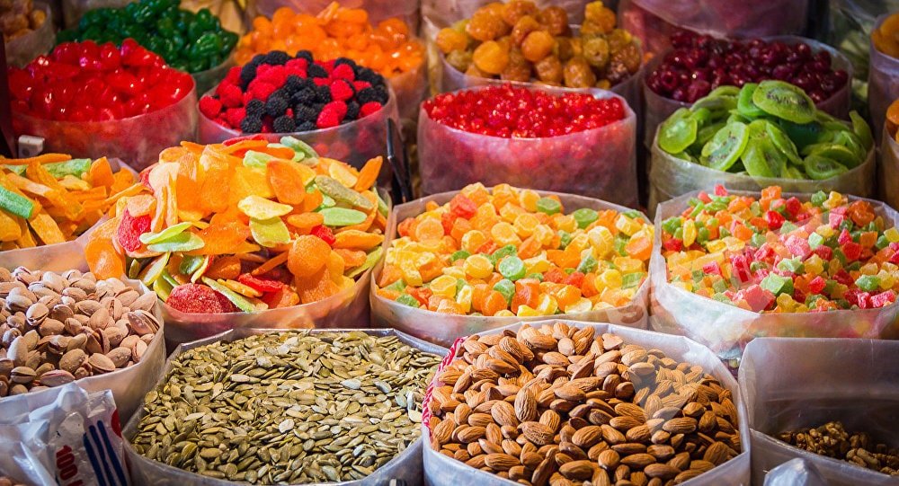
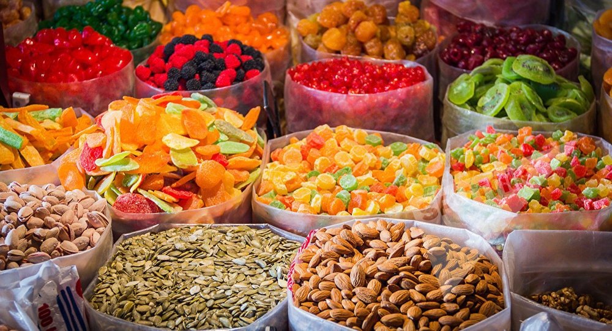

Kyrgyzstan
Kyrgyzstan is a country of amazing landscapes, beautiful lakes and mountains, mesmerize visitors from all over the world. 94% of the territory of Kyrgyzstan is mountains. This makes the country ideal for hiking, 4x4 tours, trekking, horse riding and cycling.

Kyrgyzstan
Kyrgyzstan is the country of amazing landscapes, beautiful lakes and mountains which mesmerize people from all over the world. 94% of the territory of Kyrgyzstan are mountains. This makes the country perfect for hiking, trekking, horse riding and cycling or simply reach the most beautiful places within jeep tours.
Marvel Travel agency offers you a different kinds of tours which will help you to experience Kyrgyzstan from the inside. Horseback riding, cycling all over the beautiful regions, watching the traditional games, watching Kyrgyz dance, eagle hunting, pottery master classes, tasting national food of nomadic people, seeing the yurt. All the activities that we provide within the tour will help you to get to know the inner soul of an ancient nation.

Chuy
Chuy Region or Chui Region is the northernmost region (oblast) of the Kyrgyz Republic. It is bounded on the north by Kazakhstan, and clockwise, Issyk Kul Region, Naryn Region, Jalal-Abad Region and Talas Region. Its administrative center is Bishkek, but from 2003 to May 2006 it was Tokmok.
Issyk-Kul
Issyk-Kul is an endorheic lake in the northern Tian Shan mountains in eastern Kyrgyzstan. It is the seventh deepest lake in the world, the tenth largest lake in the world by volume (though not in surface area), and the second largest saline lake after the Caspian Sea. Issyk-Kul means "warm lake" in the Kyrgyz language; although it is surrounded by snow-capped peaks, it never freezes.
Naryn
Naryn is the regional administrative center of Naryn Region in central Kyrgyzstan. Its area is 84 square kilometres (32 sq mi), and its resident population was 34,822 in 2009. It is situated on both banks of the Naryn River(one of the main head waters of the Syr Darya), which cuts a picturesque gorge through the town. The city has two regional museums and some hotels, but is otherwise residential.
Talas
Talas is a town in northwestern Kyrgyzstan, located in the Talas River valley between two mountain ranges. Its area is 13 square kilometres (5.0 sq mi), and its resident population was 32,886 in 2009. It is the administrative headquarters of Talas Region. The town was founded by East Slavic settlers in 1877. To the south is the Besh-Tash (five rocks) valley with the Besh-Tash National Park.
Jalal-Abad
Jalal-Abad is the administrative and economic centre of Jalal-Abad Region in southwestern Kyrgyzstan. Its area is 88 square kilometres (34 sq mi), and its resident population was 97,172 in 2009. It is situated at the north-eastern end of the Fergana valley along the Kögart River valley, in the foothills of the Babash Ata mountains, very close to Uzbekistan border
Osh
Osh, also spelled Oş, is the second largest city in Kyrgyzstan, located in the Fergana Valley in the south of the country and often referred to as the "capital of the south". It is the oldest city in the country (estimated to be more than 3000 years old), and has served as the administrative center of Osh Region since 1939. The city has an ethnically mixed population of about 281.900 in 2017, comprising Kyrgyz, Uzbeks, Russians, Tajiks, and other smaller ethnic groups. It is about 5 km away from the Uzbekistan border.
Kyrgyzstan
Kyrgyzstan
All the tours in Kyrgyzstan
4x4 tours
Bicycle tours
Ealge hunting
Ethno tours
Hiking
Horse riding
Trekking


Отзывы наших клиентов:


 

Фотографии наших клиентов: